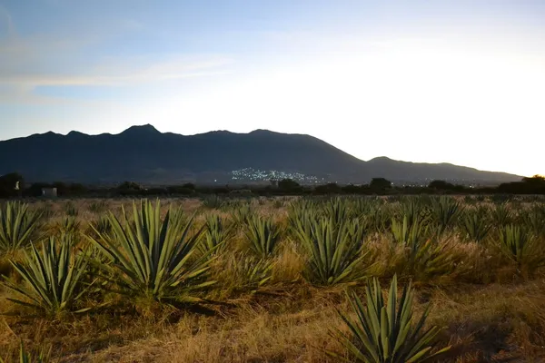

Oaxaca: Mezcal

Photo: Zyanya BMO on Unsplash
Oaxaca makes most of Mexico's mezcal, often in small village distilleries called palenques.
How it's made
Agave hearts are roasted in earth pits, which gives the smoky flavour, then crushed, fermented and distilled, often in clay or copper stills.
Mature agave hearts are roasted for days in underground pits lined with hot stones, which gives mezcal its smoky taste. They are crushed by a stone wheel (tahona) or wooden mallets, fermented with wild yeasts in open vats and distilled, usually twice, in copper or clay stills.
History
Agave spirits have been distilled in Oaxaca since the colonial period, and many palenques (small distilleries) are still run by families over generations. Mezcal gained a protected designation of origin in 1994, and Santiago Matatlán calls itself the world capital of mezcal.
Ageing and label terms
Joven (blanco) is unaged; Reposado rests 2 to 12 months in wood; Añejo at least 12 months in wood; Madurado en vidrio means rested in glass for at least 12 months.
Styles
Most mezcal is made from Espadín agave; wild agaves such as Tobalá, Tepextate and Madrecuixe give rarer, more complex mezcals. Pechuga is distilled a third time with fruit and a raw chicken or turkey breast hanging in the still.
Rules and protected names
The Mezcal DO covers Oaxaca and several other Mexican states. Since 2016 labels show three categories: Mezcal, Mezcal Artesanal (traditional methods) and Mezcal Ancestral (pit ovens, hand crushing and clay pots only). Strength must be 35–55% ABV.
How to serve and classic cocktails
Sip slowly from a small cup with orange slices and sal de gusano (worm salt). Classic cocktails: Mezcal Negroni, Oaxaca Old Fashioned and Mezcal Margarita.
With food
Mole, tlayudas, chapulines (toasted grasshoppers), grilled meats and dark chocolate.
Good to know
Some wild agaves take 15 years or more to mature, so wild mezcals are made in small amounts. Tequila is technically a type of mezcal made from one agave in a smaller area.
Producers
- Del Maguey
- Montelobos
- Mezcal Vago
- Alipús
Bottles to try
Del Maguey Vida
Smoky roasted agave, tropical fruit, ginger and earth.
Serve: In a Mezcal Negroni or Paloma
Ilegal Mezcal Joven
Gentle smoke, green agave, citrus peel and pepper.
Strength: 40% · Age and cask: Unaged
Made in Oaxaca from Espadín agave, cooked in earth pits over wood and distilled twice. The brand began as smuggled bottles for a bar in Guatemala, hence the name.
Serve: Neat in small sips, or in a Mezcal Margarita
Montelobos Mezcal Espadín
Gentle smoke, roasted agave, green pepper and citrus.
Strength: 43.2% · Age and cask: Joven (unaged)
Made from organically grown Espadín agave cooked in underground earth pits, which gives the smoky taste. It was created by Iván Saldaña, a biologist who studied agave for years.
Serve: Neat with orange slices, or in a Mezcal Negroni
Ilegal Mezcal Reposado
Gentle smoke with roasted agave, vanilla, caramel and soft spice.
Strength: 40% · Age and cask: Reposado, about 4 months in American oak
Made from espadín agave by a family of mezcaleros in Oaxaca, with the agave hearts roasted in earth pits and distilled twice. Short oak ageing rounds the smoke without hiding it.
Serve: Neat in a small glass with orange slices, or in a mezcal Old Fashioned
More agave regions
Explore all spirits in the interactive guide
The Wine Reference newsletter
New wines, stories and career guides, one email a week at most.
Over 18s only. Unsubscribe any time with one click. Your email is stored securely by Kit and never shared.
Support The Wine Reference
This guide is free, with no paywall. If it helped you choose a bottle, you can buy me a glass and keep it growing.
🍷 Buy me a glass